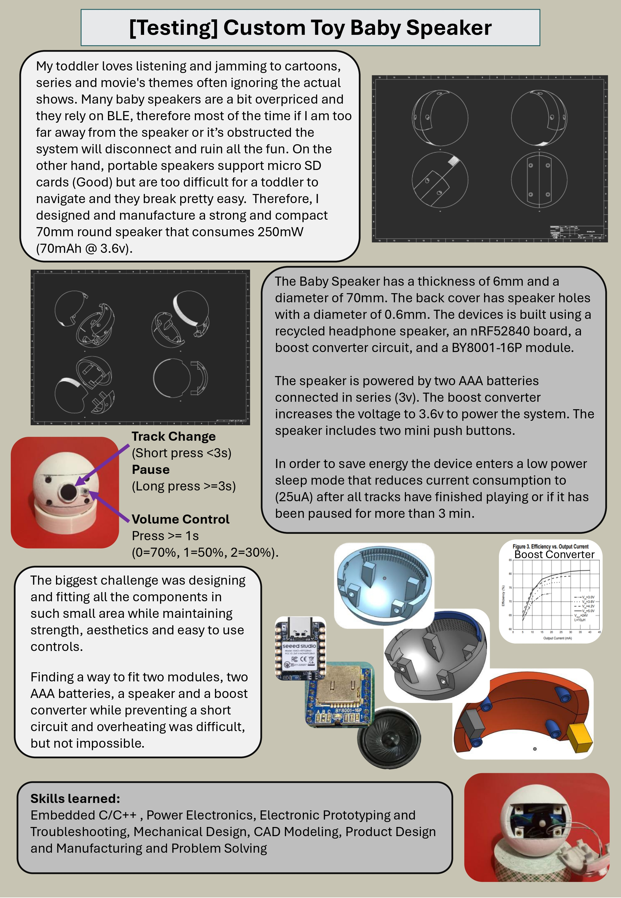
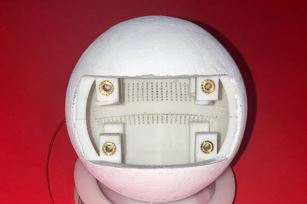
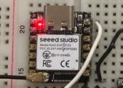
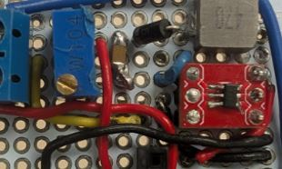

The speaker measures 70 mm in diameter and 6 mm thick and operates at approximately 250 mW. Two AAA batteries provide 3 V, which is boosted to 3.6 V to power the system.
To improve battery life, I designed a low power sleep mode that reduces current consumption to approximately 25 µA
I designed the enclosure and internal component arrangement using CAD and developed the device through prototyping, troubleshooting, and manufacturing.


